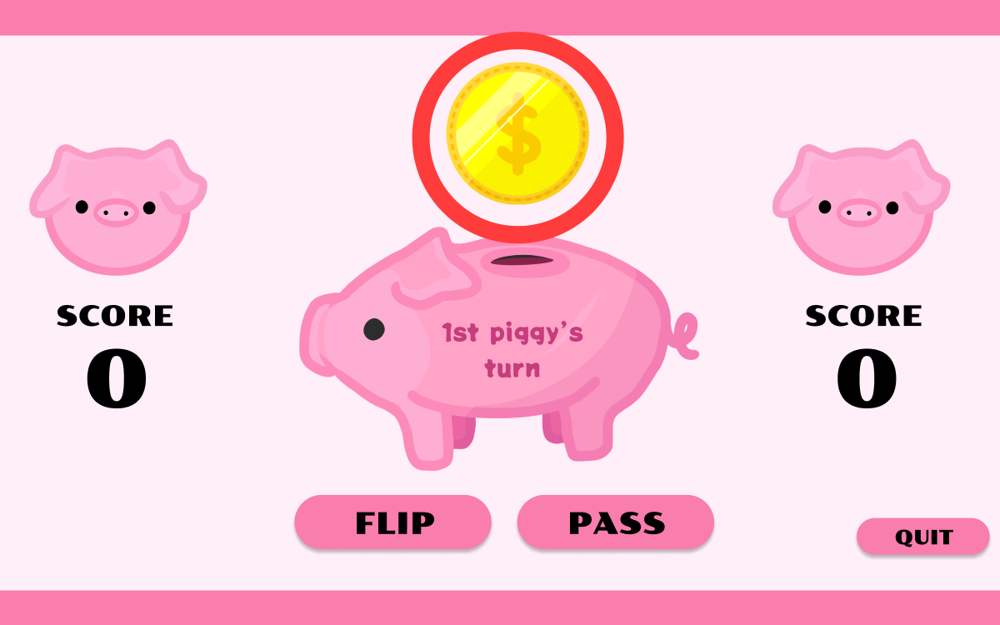
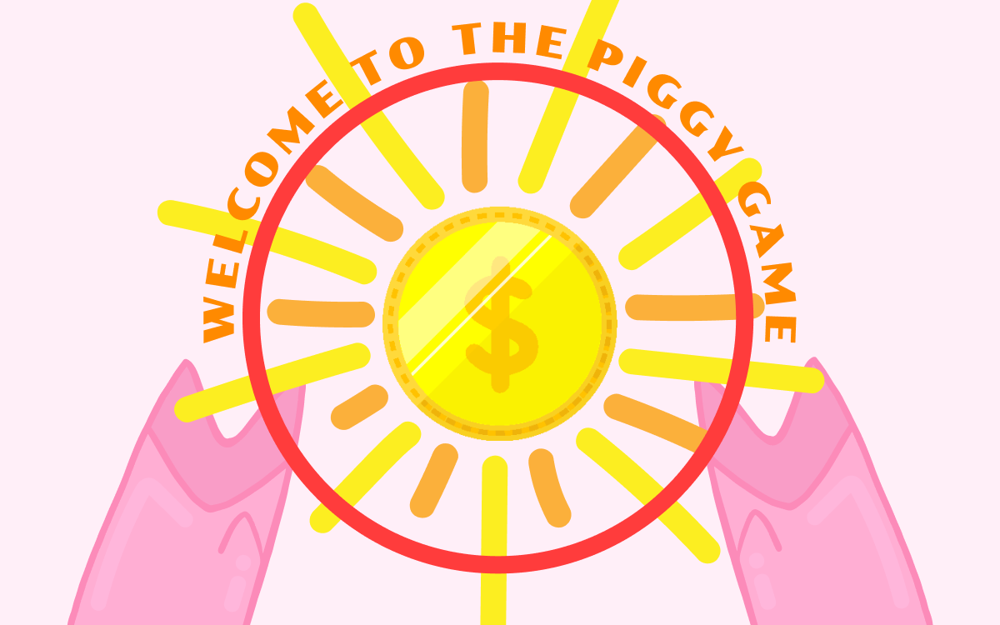

KEY FINDINGS SUMMARY
During user testing, several significant issues were identified. These included a lack of button feedback, an excessively long delay on the splash page, an unintuitive page scrolling function, and the absence of a quit button once a player has won.
USERS THAT WERE TESTED
For this part of my project, I got two users to test user feedback through the mockup I created in Figma.
Mahika, a 21 y/o female who is currently a senior and studies at UC Davis. Mahika is well versed in online games and knows exaclty what type of feedbacks games should have. She also strives to become a UI/UX designer, and has previously worked professionally in this field, both though internships and school programs such as Code Labs.
Emily, a 21 y/o female who is also currently a senior and studies at UC Davis. Emily has taken multiple UI/UX classes and has broad knowledge on videogames, especially the straigtforward cute ones. She has previously been part of Design Interactive, a student run organization on campus for deisgners, and has a keen eye for appropriate user feedback.
TASKS
For my user testing there were three main tasks I wanted my users to perform:
- Entering to the main page of the game
- Finding the button that displays the game instructions
- Starting a new game once a player has won
BUGS
I was surpised that the amount of bugs found was not as great as I thought it would be. The main ones were :
- Both users seemed to press on the coin itself and they expected it to have some sort of interaction 
- Because the delay at the splash screen page was so long, both users thought they needed to do something in order to go to the main page, like clicking or swiping on the screen. 
USABILITY PROBLEMS
Just like the bugs, I do not think there were as many usability problems that were brought up but a couple:
- The delay at the splash screen page can also be a usability problem since many people might thing the link is not working and keep reloading the page.
- Buttons do not have any feedback when hovered or pressed, so users never truly know if the button is functional
- The buttons change in position whenever clicked, and some users might find it confusing wondering where they are going.
- There isn't a quit button next to the "Start a New Game" button, so people that simply want to exit to the main page without starting a new game will not be able to do so.
OTHER FEEDBACK
The main feedback that did not technically fit in the other categories is the fact that the users tended to scroll up and down the page. The scroll was small and limited (because it is not even meant to be there). It seemed like users were confused when doing so, giving me the impression that maybe the elements in the page were too big on the screen size.